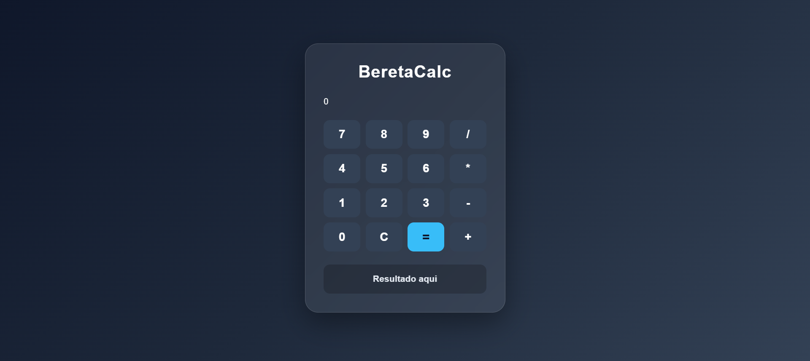
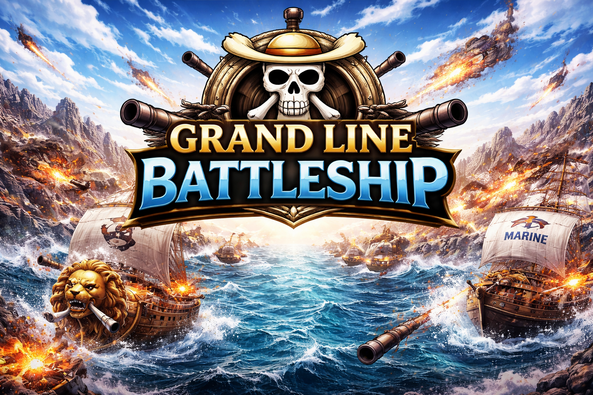
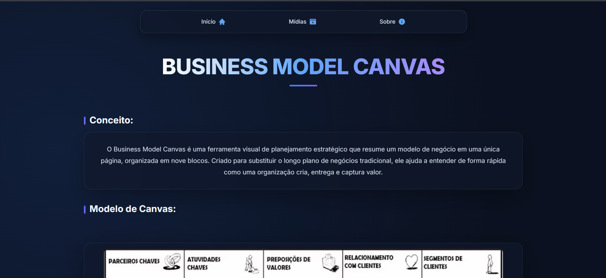

BeretaCalc
01Calculadora desenvolvida para praticar lógica, programação e interação com o usuário.
HTML
CSS
JavaScript
PORTFÓLIO • DESENVOLVIMENTO
Um espaço para reunir projetos desenvolvidos durante meus estudos em programação, tecnologia e desenvolvimento web.
Ver projetos ↓MEU TRABALHO

Calculadora desenvolvida para praticar lógica, programação e interação com o usuário.

Jogo de batalha naval inspirado no universo de One Piece, desenvolvido com JavaScript.

Projeto web desenvolvido para apresentar os principais elementos do modelo de negócios Canvas.
Sistema de gerenciamento de feiras desenvolvido com PHP e MySQL, com controle de usuários, produtos, categorias e eventos.
SOBRE MIM
Meu nome é Felipe e sou estudante interessado em tecnologia, programação e desenvolvimento de sistemas. Atualmente, estudo na Escola Antônio Cintra Gordinho e também curso Administração na ETEC Vasco Antônio Venchiarutti, em Jundiaí.
Durante meus estudos, venho desenvolvendo projetos para colocar em prática o que aprendo, principalmente nas áreas de desenvolvimento web, programação e banco de dados. Entre eles estão o BeretaCalc, o Grand Line Battleship, o Business Model Canvas e o SGFEL, um sistema de gerenciamento de feiras desenvolvido com PHP e MySQL.
Tenho interesse em continuar evoluindo na área de tecnologia, aprendendo novas linguagens e ferramentas e transformando ideias em projetos funcionais. Este portfólio reúne parte desse processo e mostra minha evolução enquanto estudante e desenvolvedor.